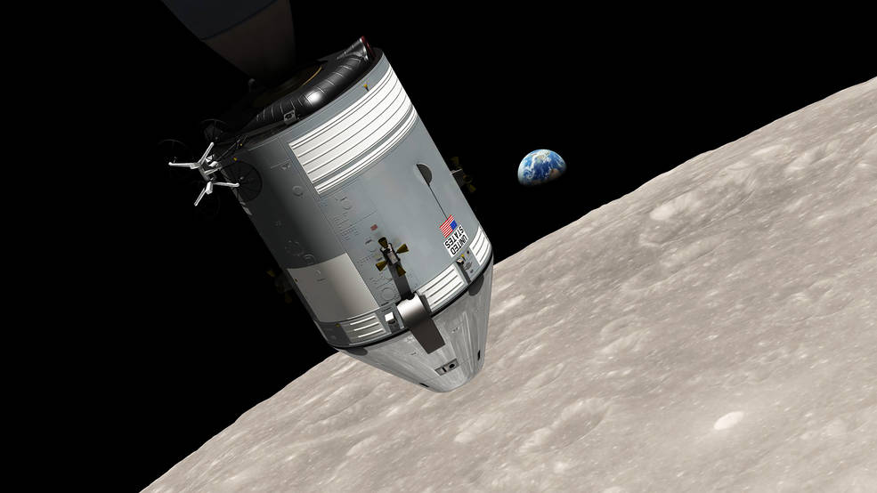

Apollo 8 was one of the most daring missions in the history of space exploration. Launched on December 21, 1968, it became the first crewed spacecraft to leave Earth's orbit, travel to the Moon, and return safely home. The crew consisted of Commander Frank Borman, Command Module Pilot James Lovell, and Lunar Module Pilot William Anders.
Originally, Apollo 8 had been planned as a test of the Lunar Module in Earth orbit. However, delays in the Lunar Module's development caused NASA to change the mission. Instead, the agency decided to send astronauts directly to the Moon using only the Command and Service Module. This bold decision accelerated progress toward the goal of landing humans on the lunar surface.
After launching aboard a Saturn V rocket, Apollo 8 entered Earth orbit before performing a powerful engine burn known as translunar injection. This maneuver sent the spacecraft on a three-day journey toward the Moon.
As the astronauts traveled farther from Earth than any humans before them, they conducted navigation checks, photographed Earth, and monitored spacecraft systems. The mission provided valuable experience operating far beyond Earth's orbit.
On Christmas Eve 1968, Apollo 8 entered lunar orbit, becoming the first crewed spacecraft to orbit another world.
During ten orbits around the Moon, the crew photographed potential landing sites and studied the lunar surface. Their observations provided valuable information for future landing missions.
One of the most famous moments occurred when William Anders photographed Earth rising above the Moon's horizon. The image, later known as "Earthrise," became one of the most influential photographs ever taken and helped change humanity's perspective on our planet.
During a live television broadcast, the astronauts shared views of the Moon and Earth with audiences around the world. They concluded the broadcast by reading passages from the Book of Genesis, creating one of the most memorable moments in television history.
After completing their lunar orbits, Apollo 8 fired its engine to begin the return journey. The spacecraft traveled back across nearly a quarter million miles of space before reentering Earth's atmosphere.
The mission concluded with a successful splashdown in the Pacific Ocean on December 27, 1968. The astronauts were recovered safely and celebrated as heroes.
Apollo 8 proved that humans could safely travel to the Moon and return. The mission demonstrated the reliability of the Saturn V rocket, validated deep-space navigation techniques, and provided critical experience for future lunar missions.
Many historians consider Apollo 8 one of the most important missions of the Apollo program because it transformed the Moon from a distant destination into a reachable objective. Its success paved the way for the lunar landing just seven months later.